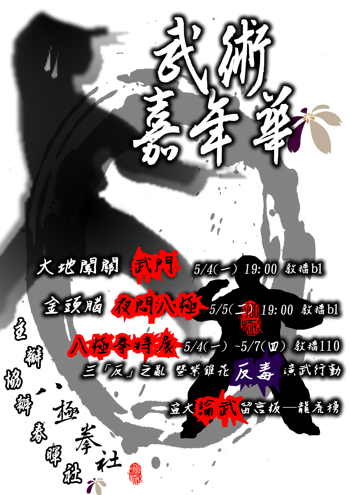

國立宜蘭大學 八極拳社 校慶活動宣傳
此番於104年5月4日至7日舉辦「武術嘉年華」活動，一方面為推展中國傳統武術以復興文化，另一方面則是為宣導反毒策略以正社會風氣。
精彩活動包括：【大地闖關─武門，5/4(一)晚上7點至8點半於教穡B1】、【金頭腦─夜問八極，5/5(二)晚上7點至8點半於教穡B1】，另在武術嘉年華期間，於【教穡110設置八極拳特展】，內有季氏八極拳相關資訊(源起、特色、技法、理論、養生、兵器等)以及【宜大論武留言板─龍虎榜供各位大談武道】，更設有【週邊鑰匙圈販售攤位】，展區開放時間為早上10點至晚上7點(5/6(三)、5/7(四)僅開放至下午5點)。重點是！參與各項活動者可得嘉年華印記(青龍、白虎、朱雀、玄武)，完整收集四個印記，即可參加抽獎！(抽獎！抽獎！人人有獎！禮卷抽不完！)
活動名稱 武術嘉年華
活動地點 國立宜蘭大學 教穡大樓 教室110
報名日期時間 2015/05/01 12:00 ～ 2015/05/07 17:00
活動日期時間 2015/05/07 10:00 ～ 2015/05/07 17:00
活動說明 此番於104年5月4日至7日舉辦「武術嘉年華」活動，一方面為推展中國傳統武術以復興文化，另一方面則是為宣導反毒策略以正社會風氣。
精彩活動包括：【大地闖關─武門，5/4(一)晚上7點至8點半於教穡B1】、【金頭腦─夜問八極，5/5(二)晚上7點至8點半於教穡B1】，另在武術嘉年華期間，於【教穡110設置八極拳特展】，內有季氏八極拳相關資訊(源起、特色、技法、理論、養生、兵器等)以及【宜大論武留言板─龍虎榜供各位大談武道】，更設有【週邊鑰匙圈販售攤位】，展區開放時間為早上10點至晚上7點(5/6(三)、5/7(四)僅開放至下午5點)。重點是！參與各項活動者可得嘉年華印記(青龍、白虎、朱雀、玄武)，完整收集四個印記，即可參加抽獎！(抽獎！抽獎！人人有獎！禮卷抽不完！)
報名人數 正取: 200 人
候補人數 候補: 50 人
主辦單位 國立宜蘭大學 八極拳社
活動聯絡人 郭惠紋
聯絡人電話 0910764296
聯絡人E-Mail dra0616gon@gmail.com
活動相關網址 http://www.wretch.cc/blog/niubajiquan
